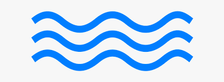
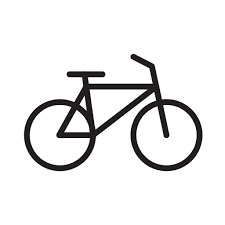

Lisa Writersblock is an art journalist, editor at VONO, and text-based creator.
Lisa loves slow writing,
, dancing, , dancing, and catering. Based in Chicago and Kyiv.
Lights of Kuyalnyk
article
Published on VONO. February 2021.
Design-stories
podcast
Published on Hexagon.Agency. July 2021—Present.